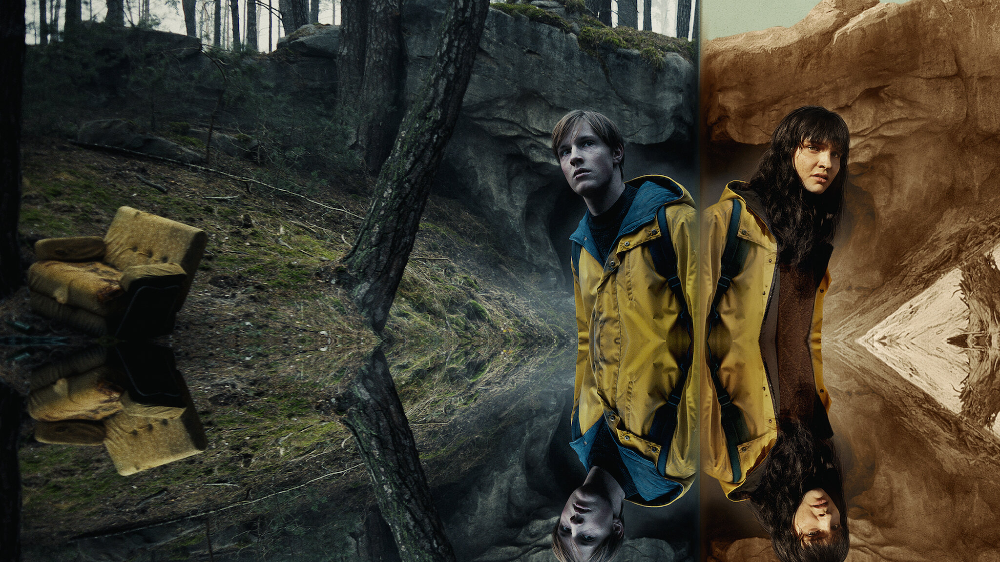

Trama
La scomparsa di due bambini in un piccolo villaggio in Germania mette in pericolo la vita e le relazioni di quattro famiglie. Le indagini per ritrovare i piccoli portano a galla torbidi segreti sugli abitanti del posto.
Categorie
Drammatico / Thriller / Fantascienza / Giallo